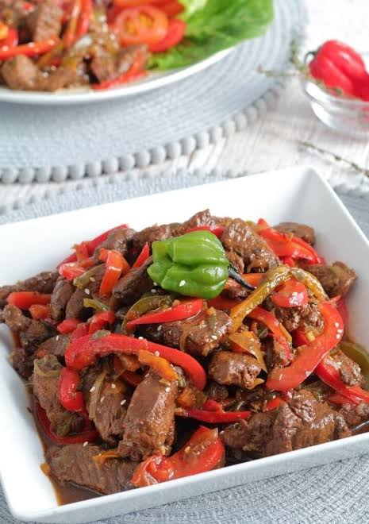

Peppered Steak

Description
Strips of beef cooked with bell pepper in a savoury sauce,
which takes let than 30 minutes.
This pepper steak recipe yields a Jamaican stir-fried dish made with sliced beef steak cooked with colourful bell pepper strips,
seasoned with thyme, ginger and other Jamaican seasonings.
Ingredients
- 1 ½ lbs Sirloin steak
- 1 tbsp Beef seasoning
- 1 small Red bell pepper
- 1 medium Carrot
- 1 small Onion
- 4 cloves Garlic
- 1 tsp Ginger
- 1 tsbp Cornstarch
- 1 small Green bell pepper
- 1 tsp Crush pimento
- 2 tsp Browning sauce
- ¼ cup Soya sauce
- ½ cup Ketchup
- ½ cup Water
- 4 tbsp Olive oil
- ¼ tsp Himalayan salt (optional)
- 1 tbsp Brown sugar (optional)
Steps
- Wash, clean and cut the beef into strips.
- Add the thyme, onion, garlic, scallion, ginger, beef/all-purpose seasoning, salt and 1 tsp browning sauce to the beef strips and combine. Leave to marinate
-
Place a skillet pan with the cooking oil on medium heat and let it hot.
Separate the marinade from the beef and add the beef strips to the cooking oil.
- Stir until all the beef strips are brown on all sides.
- Once all the beef strips are brown, add the marinade that you separated from the beef to the pan. Cook for 3-4 minutes.
-
Add the bell pepper, the rest of the browning sauce, beef broth and cornstarch.
whisk the cornstarch in the beef broth before adding it to the pan. Leave to cook for another 5-7 minutes, until the sauce thickens.
Home